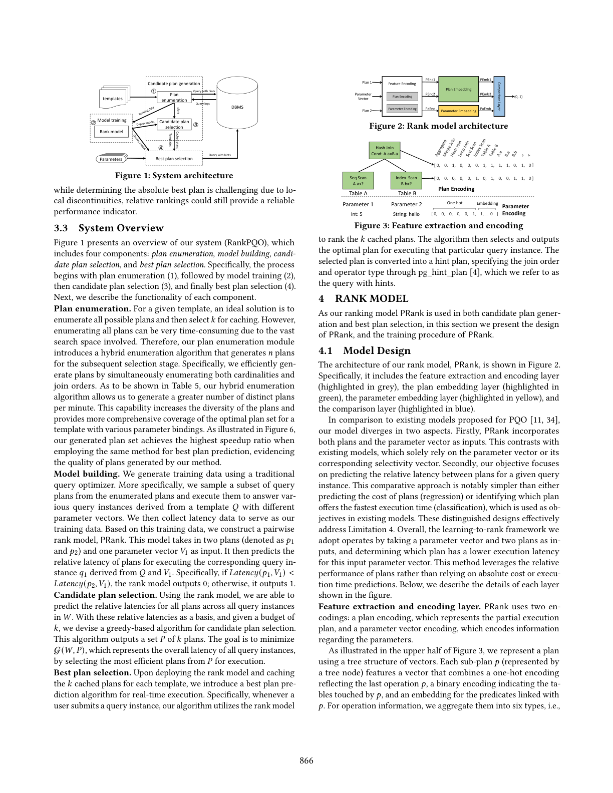
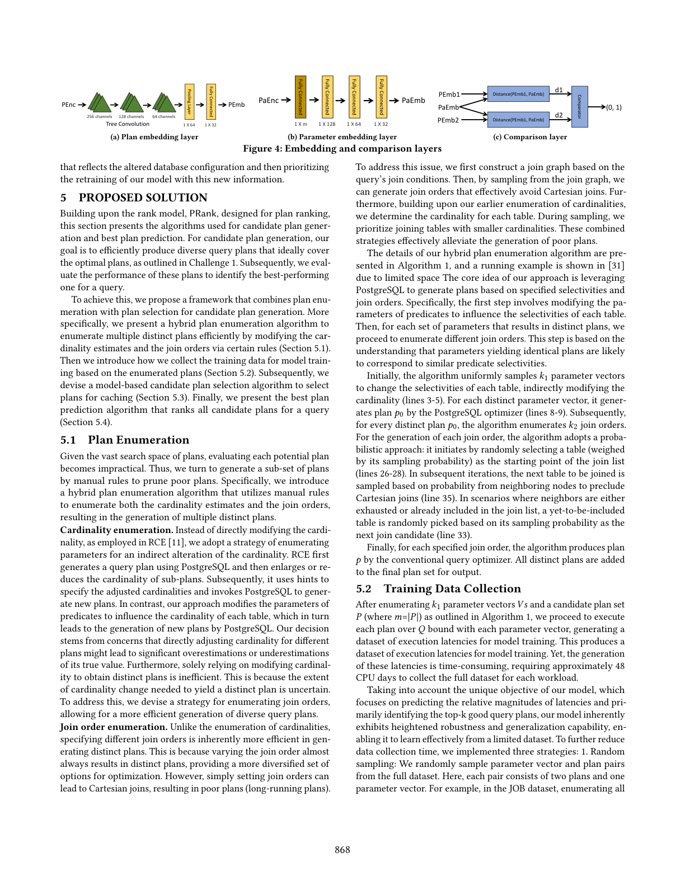
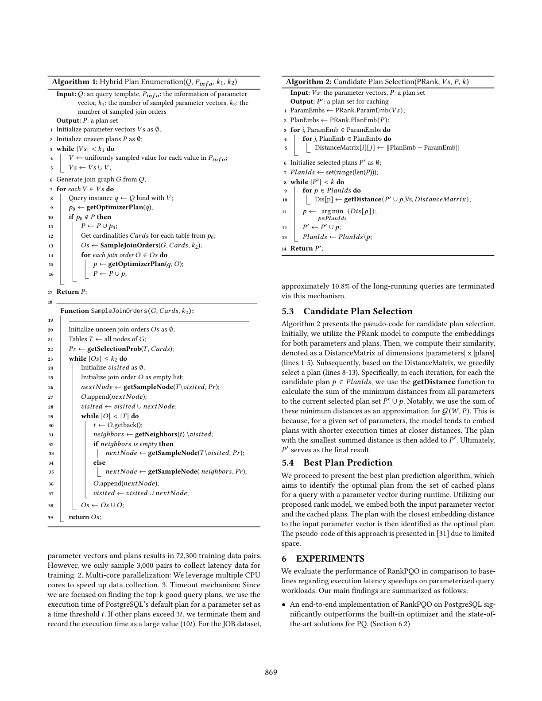
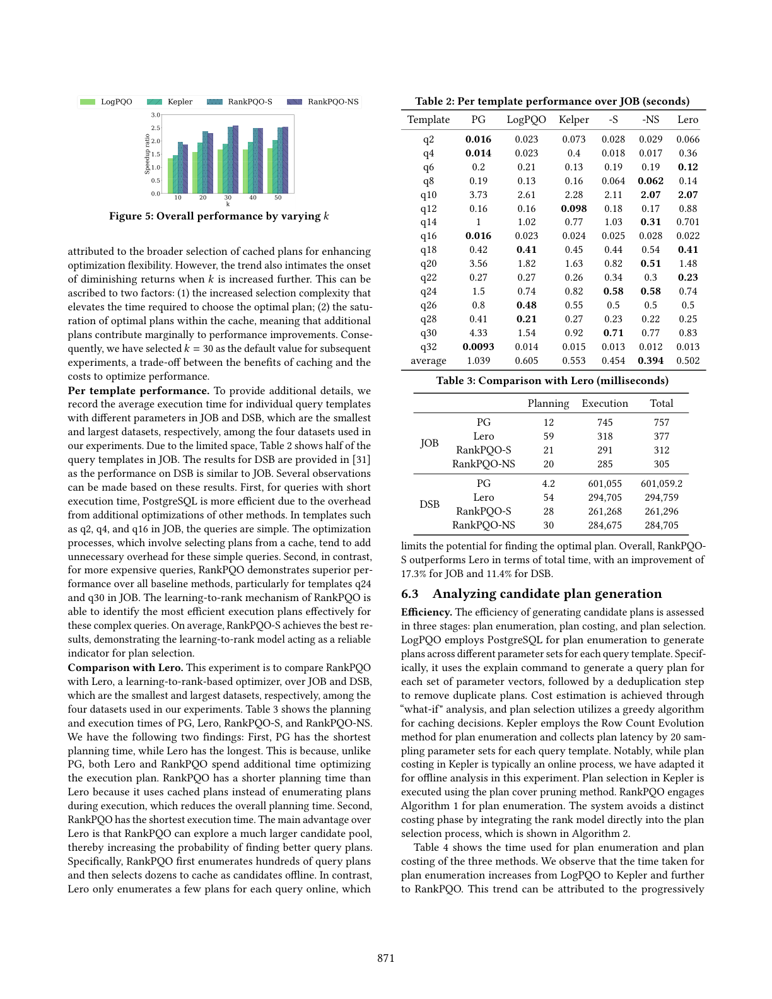
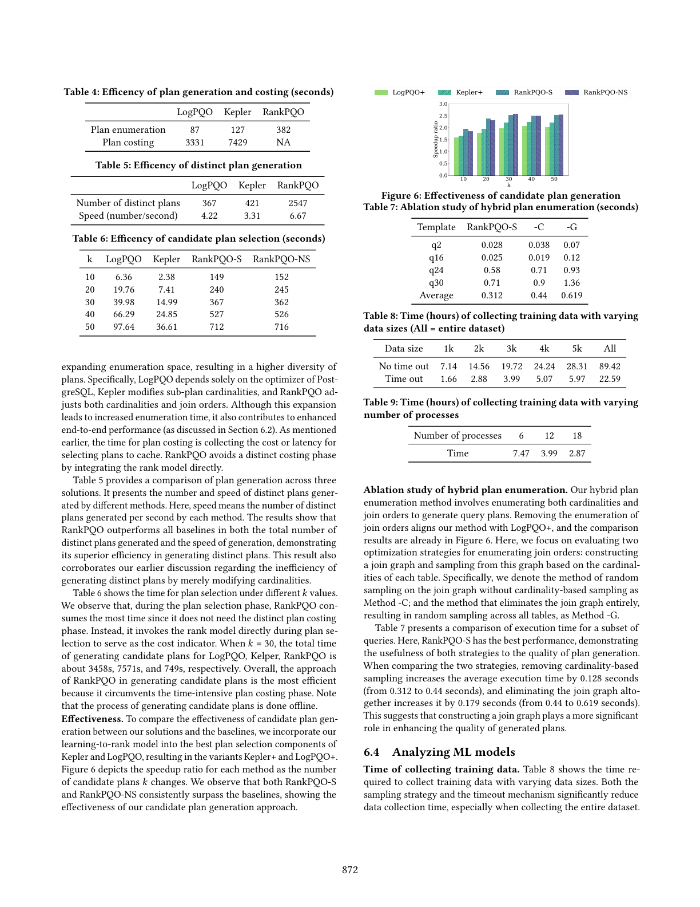
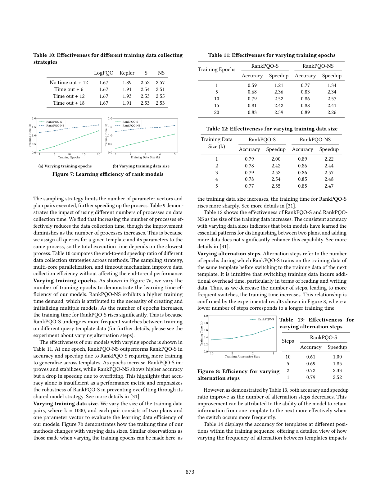
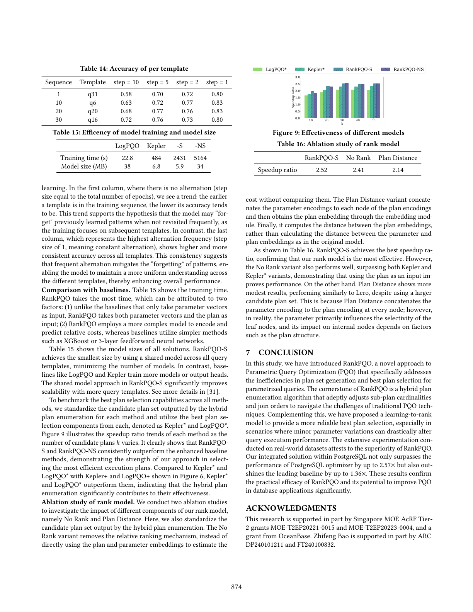

RankPQO: Learning-to-Rank for Parametric Query Optimization · Songsong Mo, Yue Zhao, Zhifeng Bao, Quanqing Xu, Chuanhui Yang, Gao Cong · 南洋理工大学 / RMIT / OceanBase
参数化查询优化（Parametric Query Optimization, PQO）对于在许多数据库应用中高效处理参数化查询（PQ）至关重要。本文针对现有 PQO 技术中的两个关键挑战展开研究，聚焦于计划集合生成与最优计划选择。在计划集合生成方面，现有方法依赖修改子计划基数，常常由于不清楚需要修改到何种程度而导致效率低下与次优性能。为克服这一问题，我们提出了一种混合计划枚举算法，能够灵活地同时调整基数与连接顺序。在最优计划选择方面，近期方法依赖机器学习模型来选择预测延迟最小的计划，但当参数绑定发生变化时，它们难以做出准确预测——参数上细微的变化都可能显著影响基数，进而影响计划最优性。为克服这一问题，我们提出采用学习排序（learning-to-rank）模型，以相对排序作为更可靠的性能指示器。我们的方法集成到 PostgreSQL 中，并在真实数据集上进行了大量实验，相较基线在效率与准确率两方面均展现出显著提升。具体而言，它相比 PostgreSQL 优化器最高加速 2.57×，并超越最佳现有基线最高达 1.36×。
参数化查询（PQ）在数据库应用中被广泛使用，即同一 SQL 语句被多次执行，每次带有不同的参数绑定。参数化查询使用占位符表示参数，参数值在运行时提供，从而通过减少重复编译并缓解 SQL 注入攻击来提升效率与安全性。在处理复杂 SQL 查询时，一种常见做法是 Opt-Always 策略：对每一个查询实例单独优化，这会引发可观的 CPU 与内存开销。相比之下，许多商用数据库系统[1,2,36] 偏好 Opt-Once 策略：仅优化首个查询实例，并将其计划复用于后续查询，这可能在后续执行中导致次优性能。参数化查询优化（PQO）[5,7,8,11–13,16–18,34] 提供了一种平衡的解决方案，它旨在相比 Opt-Always 大幅降低优化开销，同时最小化与 Opt-Once 相关的执行次优风险。
在本工作中，我们关注 select-project-join-aggregate 查询在参数化查询场景下的查询优化问题。采用候选计划生成与最优计划预测相解耦的架构[11,34]，PQO 问题包含两个主要任务：为参数化查询离线识别出少量（约几十个）计划进行缓存；以及在运行时高效地从缓存中选出最优的缓存计划来执行该参数化查询的某个实例。
为完成这些任务，我们的方法分三步。首先，我们为某个参数化查询枚举出一大子集（约数百个）潜在计划。核心问题在于庞大的搜索空间，使得对每一潜在计划做穷举评估不可行；因此我们的目标是以高效方式生成能切实覆盖高质量（即低延迟）计划的所有可能计划的子集。其次，从该大子集中，我们选出相对较少数量（约数十个）的计划进行缓存；此步骤存在两个关键问题：一是选出 k 个候选计划来缓存，使它们针对用户输入参数向量取值范围最大程度地覆盖最优计划（该问题被证明为 NP 完全[10]）；二是无需实际执行即可评估每个计划的质量。第三，在运行时，我们为参数化查询的任意实例选出最优的缓存计划执行；这里的核心问题同样是在无实际执行的情况下评估每个计划的质量，这对于针对用户给定的参数向量输入选出最优计划至关重要。我们将这些问题归纳为两大主要挑战。
挑战 1 既要探索第一步中庞大的搜索空间，又要解决第二步中 k 个候选计划的覆盖问题。针对挑战 1，早期方法[12,34] 通常调用传统查询优化器处理不同参数组合，再用启发式方法选出候选计划集。较新的 Kepler[11] 引入改变子计划基数的方法来枚举新计划。确实，改变参数与调整子计划基数都可能改变基数，因为不同参数也会带来不同的查询路径。然而难点在于：我们很难知道需要把基数修改到何种程度才能生成新计划，这使得计划生成效率很低。例如，当一个子计划的基数被放大十倍时，PostgreSQL 仍可能生成与此前完全相同的计划。为应对这一点，我们提出一种混合计划枚举算法，同时修改基数与连接顺序。具体而言，我们先枚举参数以改变各表的选中性（selectivity），并筛选出能产生不同查询计划的参数组合（因为产生相同计划的参数往往对应相似的谓词选中性）。对于每个查询实例（即模板与每个参数向量的绑定），我们再在逻辑层枚举不同的连接顺序，最后指定连接顺序并调用 PostgreSQL 优化器为该查询实例生成新查询计划。
此外，我们通过构建连接图并利用基数辅助连接顺序的采样过程，提升了所生成计划的质量（高质量即低延迟）。这种同时修改基数与连接顺序的混合方法，既加快了计划生成，又有助于生成高质量计划。对于选出 k 个候选计划缓存，现有方案[11,34] 通常采用基于代价或延迟的贪心方法，但这些方法需要额外时间去收集代价或延迟数据（见表 4）。为此，我们采用一个学习排序模型，通过贪心算法高效地从枚举出的计划中挑选子集。
挑战 2 是在无实际执行的情况下评估不同计划，这对第二步中的第二个问题以及我们方案的整个第三步都至关重要。针对该挑战，早期工作[5,7,12] 聚焦于设计代价函数进行估计，但这些方法常受限于代价线性或单调性的假设。随着机器学习在查询代价估计中的日益应用[21]，近期研究[11,34] 转向使用 ML 模型应对该挑战（详见第 3.2 节）。然而，现有模型仅以参数向量作为唯一输入，假设局部连续性（即相似参数导致相似计划）。但如[31] 中的反例所示，即便参数上的细微差异也可能显著影响同一计划的查询延迟，表明存在局部不连续性。这意味着仅依赖参数相似性可能导致选出次优计划。为应对局部不连续性问题，我们提出一个学习排序模型。其依据在于：尽管由于局部不连续性，绝对代价预测十分困难，但相对排序仍可作为性能的可靠指示器。此外，对于 PQO，无论是候选计划生成还是最优计划预测，都不需要精确的代价估计；只要理解不同计划相对不同查询参数的相对代价，就足以识别最优执行计划。
综上，我们的贡献如下：
参数化查询优化。 PQO 已被广泛研究[5,7,8,11–13,16–18,34]。这些研究有共同目标：(1) 为查询模板在参数值的不同区间考虑一组备选计划（即候选计划生成）；(2) 在运行时基于实际参数值选出最合适计划（即最优计划选择）。在候选计划生成任务上，先前工作[13,16,18] 聚焦于寻找覆盖参数化谓词整个选中性区间的最优计划集（一个 NP-hard 任务[10]）；[17] 证明少量计划就足以在选中性空间内达到近最优。因此多数方案[8,34] 聚焦于通过启发式搜索在选中性空间内识别计划集，以匹配现有优化器的性能。在最优计划选择任务上，早期方法如 Ellipse[7]、基于密度的聚类[5] 和 SCR[12] 受限于线性或单调代价函数假设，对复杂 SQL 查询表现不佳[29]。
近期，端到端的学习型方案[11,34] 被提出用于 PQO，它们利用传统算法生成候选计划，并用基于 ML 的模型选择最优计划。在候选计划生成上，查询日志驱动的方法[34] 受限于内置优化器，而以 Kepler[11] 为代表的启发式方法通过基数调整提升多样性但面临效率挑战；为此我们提出了同时修改基数与连接顺序的混合方法（详见第 1 节挑战 1 部分）。在最优计划选择任务上，现有方法[11,34] 通常将其视为分类或回归问题，仅以参数向量为输入，假设相似参数产生相似计划。但细微参数变化可能引起显著的基数改变并需要不同计划；为此我们在第 3.2 节提出基于学习排序的方法用于最优计划选择。
面向查询优化的机器学习。 将机器学习应用于查询优化受到广泛关注[21]，包括基数估计[15,20,33]、端到端查询优化器[24,26,35,41] 等。与我们的工作最相关的是端到端查询优化器：Neo[26] 与 Balsa[35] 采用代价估计模型进行基于模型的计划生成；而 Bao[24]、HybridQO[37] 与 Lero[41] 利用传统优化器生成候选计划，再辅以代价估计模型进行计划选择。我们的工作不同之处在于聚焦 PQO，旨在为查询模板缓存优质计划并在执行时针对特定查询参数选出最优计划。这些模型被设计用于估计某一特定查询计划的执行时间，而我们的需求是预测一个计划针对不同用户输入参数向量的执行时间。以 Lero 为例，它为特定查询枚举计划集并用一个排序模型比较该集合内任意两计划以选优；而我们的挑战是为模板生成规模大得多的计划集、选出子集缓存，再于查询时依据不同用户参数向量选出计划，因此需要能预测不同参数向量下哪个计划代价最小的模型，使现有优化模型不适用于我们的问题（详见第 4.1 节）。
学习排序范式。 RankPQO 采用学习排序范式[23]，该方法广泛用于文档检索[19] 与 Lero[41] 中的查询优化等任务。现有学习排序技术可分为逐点[40]、成对[19] 与列表[14] 三类。值得注意的是，我们的工作是首个将学习排序范式应用于 PQO 问题的，并基于成对（pairwise）方法，聚焦于比较条目对以确定哪个更优。
我们给出问题定义（3.1 节）、讨论现有工作的局限（3.2 节），并概述我们的方法（3.3 节）。
遵循先前研究[11,34]，我们关注参数化查询。令 Q 表示一个带 d 个参数化谓词的参数化查询（即查询模板），相应地，查询实例 q 表示模板 Q 绑定到参数向量 V = [v₁, … , v_d]。令 p 表示 Q 的一个查询计划；而用 p 执行 q 时的真实执行时间记为 Latency(p, q)。下面我们定义 PQO 的两个子问题（候选计划生成与最优计划选择）。
我们简要描述用于 PQO 的查询日志驱动方案[34]（LogPQO）与 Kepler[11]，并讨论其局限。两种方法都采用“候选计划生成 + 最优计划预测”的流程。在应对挑战 1 时，候选计划生成的目标是为一查询模板识别用于缓存的计划集。查询日志驱动方案旨在通过选择由内置优化器生成、代价最小的计划来匹配内置优化器性能，但该方法本质上受限于内置优化器性能，无法生成优于它的计划（局限 1，L1）。此外，Kepler 通过启发式地改变基数来枚举查询计划，存在两个主要问题：其一，由于不清楚需要修改基数到何种程度才能产生新计划，计划生成缺乏效率（局限 2，L2）；其二，为生成新计划可能将基数改动到严重偏离真实值的程度，从而产生低质量（高延迟）计划（局限 3，L3）。
为克服 L1，我们采用新颖的计划生成方法：通过为应对 L2 直接以指定连接顺序生成新查询计划来提升效率；并通过构建连接图、利用基数辅助连接顺序采样来应对 L3、提升计划质量（实验表 7 将证明两种策略都有助于计划生成质量）。在最优计划预测方面，关键挑战（第 1 节挑战 2）在于无实际执行地评估不同计划。现有方法通常将之视为分类或回归问题：可形式化为多类分类问题[34]（k 个计划对应 k 个类，模型基于最优计划 id 标签划分特征空间），或建模为回归问题[11,34]（近似输入特征下计划的估计代价）。然而这些模型[11,34] 仅以参数向量为输入，遵循“参数空间中相似参数值产生相似或相同计划”的局部一致性假设（局限 4，L4）；但现实中细微参数差异就可能引发基数剧变并导致不同计划（如[31] 中的例子）。查询日志驱动方案[34] 曾考虑以参数相关选中性率作为输入，但如 Kepler[11] 所示，由于基数估计质量差，该策略表现远差。为克服 L4，我们提出同时以查询计划与参数信息作为输入，并采用学习排序技术进行计划选择——因为尽管由于局部不连续性难以确定绝对最优计划，相对排序仍能提供可靠的性能指示器。
图 1 展示了 RankPQO 系统的整体概览，包含四个组件：计划枚举、模型构建、候选计划选择、最优计划选择。流程始于计划枚举（①），接着模型训练（②），然后候选计划选择（③），最后最优计划选择（④）。

计划枚举。 对给定模板，理想方案是枚举所有可能计划再选 k 个缓存；但搜索空间庞大，穷举耗时。因此我们的计划枚举模块引入混合枚举算法，为后续选择阶段生成 n 个计划。具体地，我们同时枚举基数与连接顺序以高效生成计划。如实验表 5 所示，我们的混合枚举算法每分钟能生成更多不同计划，提升了计划多样性，并为带有不同参数绑定的模板提供对最优计划集更全面的覆盖。如图 6 所示，在采用相同最优计划预测方法时，我们生成的计划集取得了最高的加速比，证明了所生成计划的质量。
模型构建。 我们利用传统查询优化器生成训练数据：从枚举计划中抽样一个子集并执行它们，以回答由模板 Q 与不同参数向量派生的各类查询实例，收集延迟数据作为训练数据。基于此训练数据，我们构建成对排序模型 PRank。该模型以两个计划（记为 p₁ 与 p₂）和一个参数向量 V₁ 为输入，预测对应查询实例 q₁（由 Q 与 V₁ 派生）执行两计划的相对延迟——若 Latency(p₁, V₁) < Latency(p₂, V₁) 则输出 0，否则输出 1。
候选计划选择。 利用排序模型，我们能预测 W 中所有查询实例上所有计划的相对延迟；以此为基础并给定预算 k，我们设计了基于贪心的候选计划选择算法，输出 k 个计划的集合 P，目标是通过从 P 中选择最高效的计划执行来最小化 G(W, P)。
最优计划选择。 在部署排序模型并为每个模板缓存 k 个计划后，我们引入用于实时执行的最优计划预测算法：每当用户提交查询实例，算法利用排序模型对 k 个缓存计划排序，选出并输出执行该实例的最优计划。所选计划被转换为带提示（hint）的计划，通过 pg_hint_plan[4] 指定连接顺序与算子类型，即“带提示的查询”。
由于排序模型 PRank 同时用于候选计划生成与最优计划选择，本节介绍 PRank 的设计与训练过程。
排序模型 PRank 的架构如图 2 所示，包含特征提取与编码层（灰色高亮）、计划嵌入层（绿色高亮）、参数嵌入层（黄色高亮）与比较层（蓝色高亮）。与现有 PQO 模型[11,34] 相比，我们的模型在两个层面有所不同：其一，PRank 同时以计划和参数向量为输入，而现有模型仅依赖参数向量或其对应选中性向量；其二，我们的目标聚焦于预测给定查询实例下两计划间的相对延迟，这比预测计划代价（回归）或识别最快执行计划（分类）更简单，后两者是现有模型的目标。这些差异化设计有效应对了局限 4。整体上，我们采用的学习排序框架以参数向量与两个计划为输入，判断哪个计划对该输入参数向量有更低执行延迟，从而利用计划的相对性能而非依赖绝对代价或执行时间预测。下面描述图中各层细节。
特征提取与编码层。 PRank 使用两种编码：计划编码（表示部分执行计划）与参数向量编码（编码参数相关信息）。如图 3 上半部分所示，我们用向量树结构表示计划：每个子计划 p（对应树节点）的特征向量融合了反映最后操作 p 的 one-hot 编码、指示 p 触及了哪些表的二值编码、以及与 p 关联的谓词嵌入。操作信息聚合为六类：哈希连接、归并连接、循环连接、索引扫描、顺序扫描、聚集，每类编码为六维 one-hot 向量；表信息用 one-hot 编码（每位指示节点是否触及对应表）；每个谓词将其涉及的操作符（如 <、>、=、BETWEEN、LIKE 等）与列编码为 one-hot 向量，再用全连接神经网络嵌入为定长向量，多谓词节点用平均池化得到一致嵌入尺寸。如图 3 所示，我们的向量不包含估计代价、估计基数、行宽或基于采样的嵌入，因为这些因素与用户可变输入导致的未知参数高度相关。如图 3 下半部分，对维度为 m 的参数向量，我们仅以 m 个参数值作为输入特征，支持整数、浮点、字符串三类：整数用 one-hot 编码，浮点归一化到 (0,1)，字符串用嵌入。
计划嵌入层。 在 PRank 的计划嵌入层（PlanEmb）中，计划从其原始特征空间映射到 32 维嵌入空间。基于早期对计划表示模型（Transformer 类[27,39]、TCNN 类[24,25]、TreeLSTM 类[32,38]）的比较，在选用相同特征时这些模型性能接近，但树卷积神经网络[28]（TCNN）效率更高。为高效捕获树结构计划信息，我们采用 TCNN：如图 4a，向量化的查询计划树经过三层树卷积，最终卷积层后通过动态池化压平为单向量，再由全连接层转换为 32 维嵌入供后续比较。
参数嵌入层。 出于效率考虑，我们采用轻量前馈神经网络（ParamEmb）进行参数嵌入，如图 4b：该网络接收编码后的参数向量并转换为 32 维嵌入。
比较层。 对给定用户输入参数向量，目标是判定每对计划中哪个更优。如图 4c，比较层以参数向量嵌入（PaEmb）与两个计划嵌入（PEmb1、PEmb2）为输入，输出一个二值标签指示该对中更优的计划。首先计算计划嵌入与参数向量嵌入之间的距离：d₁ = ‖PaEmb − PEmb1‖，d₂ = ‖PaEmb − PEmb2‖；再求两者之差 d = d₁ − d₂；最后将 d 送入 logistic 激活函数 φ(d) = 1/(1+exp(−d)) 得到 PRank 的最终输出。若该输出 < 0.5，表示 Latency(p₁, V) < Latency(p₂, V)；否则 Latency(p₁, V) ≥ Latency(p₂, V)。

损失函数。 为使模型准确预测每对中的更优计划，我们采用二元交叉熵（BCE）损失进行训练：
其中 y_i 为训练数据中第 i 个对的真实标签（1 表示 p₁ 更优，0 表示 p₂ 更优）；ŷ_i 为模型预测 p₁ 优于 p₂ 的概率，ŷ_i = 1/(1+exp(−d))，d 为计划与参数向量嵌入间距离之差；m 为训练数据中计划对的总数。通过最小化该损失，我们增强模型对给定参数向量正确识别更优计划的能力。
成对训练。 我们采用成对比较框架训练 PRank：对每个参数向量 V 及其缓存候选计划 {p₁, … , p_k}（第 5.2 节讨论），基于式 (3) 的损失生成 k(k−1) 个训练样本。具体而言，对每对 (i, j)（1 ≤ i ≠ j ≤ n），构造特征为 (V, p_i, p_j) 的样本，若 Latency(p_i, V) ≥ Latency(p_j, V) 则标签为 1，否则为 0。
训练流程。 初始方法为每个查询模板单独训练一个模型（称为 RankPQO-NS，无模型共享）。如表 11、表 15 所示，该策略存在过拟合、推理时间长、模型体积大（约 n MB，n 为模板数）等问题。为缓解，我们采用跨所有模板共享一个模型、但每个模板有独立参数嵌入输入层的策略（因每个模板参数向量不同），称为朴素共享模型策略；但表 13 显示该方法（实验中 Steps=10）会导致后训练模板过拟合、先训练模板欠拟合。为此我们引入改进：在共享模型训练中交替使用各模板的训练数据，称为 RankPQO-S（带交替训练的共享模型）。表 13 显示 RankPQO-S（Steps=1）通过平衡不同模板间的训练取得最佳性能，有效缓解了过拟合与欠拟合。
模型重训练。 当前实现假定数据库配置、优化器行为与数据模式相对稳定；但即便偶发变化，也需要相应更新模型：收集反映变更后数据库配置的数据，并优先用新信息重训练模型。
基于用于计划排序的 PRank 模型，本节给出候选计划生成与最优计划预测所用算法。候选计划生成的目标是高效产生多样化、能理想覆盖最优计划的查询计划（挑战 1），随后评估这些计划以识别最优者。我们提出一个结合计划枚举与计划选择的框架：5.1 节给出混合计划枚举算法（通过人工规则同时修改基数估计与连接顺序枚举多个不同计划）；5.2 节介绍基于枚举计划收集训练数据；5.3 节给出基于模型的候选计划选择算法；5.4 节给出为查询对所有候选计划排序的最优计划预测算法。
鉴于庞大的计划搜索空间，逐一评估不可行，我们通过人工规则剪枝劣质计划、生成子集。具体地，我们引入混合计划枚举算法，利用人工规则同时枚举基数估计与连接顺序，从而生成多个不同计划。基数枚举： 不同于 RCE[11] 直接修改基数，我们采用枚举参数以间接改变基数的策略——RCE 先用 PostgreSQL 生成查询计划再放大/缩小子计划基数，并借助提示指定调整后的基数再调用 PostgreSQL 生成新计划；而我们通过修改谓词参数来影响每张表的基数，进而由 PostgreSQL 生成新计划。这是因为直接为不同计划调整基数可能导致对其真实值的高估或低估，且仅靠修改基数获得不同计划效率低下（所需基数改动幅度不确定）。为此我们设计枚举连接顺序的策略以更高效生成多样化计划。连接顺序枚举： 与基数枚举不同，指定不同连接顺序本质上更高效（因为改变连接顺序几乎总是产生不同计划），但简单设置连接顺序可能引发笛卡尔积（产生劣质长耗时计划）。对此，我们首先基于查询连接条件构建连接图，通过从连接图采样生成能避免笛卡尔积的连接顺序；并基于先前的基数枚举确定每张表的基数，在采样时优先连接基数较小的表。这些策略共同缓解了劣质计划的生成。算法 1 给出了混合计划枚举算法的细节：核心思想是利用 PostgreSQL 基于指定选择性与连接顺序生成计划——先修改谓词参数影响各表选中性，再对每个产生不同计划的参数集枚举不同连接顺序（参数产生相同计划往往对应相似谓词选中性）。算法先均匀采样 k₁ 个参数向量改变各表选中性（第 3–5 行）；对每个不同参数向量用 PostgreSQL 优化器生成计划 p₀（第 8–9 行）；对每个不同 p₀ 枚举 k₂ 个连接顺序，采用概率方法：随机（按采样概率加权）选取起始表（第 26–28 行），后续从邻居节点按概率采样以排除笛卡尔积（第 35 行），邻居耗尽或已加入时按采样概率随机选未加入表（第 33 行）；最后对每个指定连接顺序用传统优化器生成计划 p，所有不同计划加入最终输出集。

枚举出 k₁ 个参数向量 Vˢ 与候选计划集 P（m=|P|，见算法 1）后，我们将每个计划在绑定各参数向量的 Q 上执行，生成用于模型训练的执行延迟数据集。但延迟收集耗时，每个工作负载约需 48 CPU 天收集完整数据集。鉴于模型聚焦于预测延迟相对大小、识别 top-k 优质计划，其本身具备较强的鲁棒性与泛化能力，能从有限数据集有效学习。为进一步缩短收集时间，我们实施三策略：(1) 随机采样——从完整数据集随机抽参数向量与计划对（每对含两计划一参数向量，如 JOB 数据集枚举全部参数向量与计划可得 72,300 训练对，但我们仅采样 3,000 对收集延迟）；(2) 多核并行——利用多 CPU 核加速；(3) 超时机制——以 PostgreSQL 默认计划对某参数集的执行时间为阈值 t，其他计划超过 3t 则终止并记录为较大值（10t），JOB 数据集中约 10.8% 长查询经此机制终止。
算法 2 给出候选计划选择的伪代码：先用 PRank 计算参数与计划的嵌入，再计算相似度（记为 |参数| × |计划| 的距离矩阵，第 1–5 行）；随后基于距离矩阵贪心选择计划（第 8–13 行）：每轮对每个候选计划 p，用 getDistance 函数计算所有参数到当前已选计划集 P′ ∪ p 的最小距离之和；用这些最小距离之和近似 G(W, P)（因为对给定参数，模型倾向于将执行时间短的计划嵌入得更近），将距离和最小的计划加入 P′，最终 P′ 作为结果。
我们给出最优计划预测算法，旨在运行时从缓存计划集中为带参数向量的查询实例识别最优计划：利用排序模型嵌入输入参数向量与缓存计划，将与输入参数向量嵌入距离最近的计划识别为最优计划。该方法的伪代码因篇幅所限见[31]。
我们在参数化查询工作负载上，针对执行延迟加速比将 RankPQO 与基线进行比较。主要发现：(1) 在 PostgreSQL 上端到端实现 RankPQO 显著优于内置优化器与最先进的 PQ 方案（6.2 节）；(2) 我们的候选计划生成算法相比现有基线能更高效、更有效地识别明显更优的计划（6.3 节）；(3) 学习排序模型在 PQO 问题上表现优于回归模型（6.4 节）。
数据集。 四个数据集：JOB（基于 IMDB，33 个参数化查询，每查询合成 200 个参数向量）、TPCH（8 张表，scale factor=10，22 个参数化查询，每查询 200 个参数向量）、Stack（真实 StackExchange 数据，42 个原基准查询 + 45 个手写模板，参数源自 Kepler）、DSB（在 TPC-DS 上增强复杂数据分布，15 个 SPJ 查询，scale factor=100，每查询 5 个参数向量）。每个参数化查询随机取 80% 参数向量作训练集、20% 作测试集，默认以 JOB 为数据集。
基线。 对比 PostgreSQL、LogPQO[34]、Kepler[11]，以及 RankPQO-S 与 RankPQO-NS；同时与学习型优化器 Lero[41] 对比（Lero 以 Opt-Always 方式使用，因其已超过其他学习型优化器故未纳入其他基线）。
指标与默认参数。 采用运行时间与加速比（speedup，PostgreSQL 运行时除对比方案运行时）两个指标，并评估模型准确率（每查询成对计划排序正确的比率）。模型训练用 Adam、学习率 0.001。默认设置：缓存候选计划数=30；训练 epoch=10；成对训练数据量=3000；无超时机制、12 核收集数据；算法 1 中 k₁=200、k₂=50；列/比较符/字符串参数的嵌入维度=32；RankPQO-S 交替步长=1。每个结果取 5 次运行中位数。实验环境：Intel i9-10900X（20 物理核），128GB 内存，NVIDIA RTX 3080（10GB），PostgreSQL 12.5。
跨数据集变化。 表 1 显示两版 RankPQO 相对 PostgreSQL、LogPQO、Kepler、Lero、True Cardinality、Fastest Found Plan 的加速比。观察：(1) Fastest Found Plan 最佳，说明混合计划枚举能识别好计划；RankPQO 因选 top-k 服务不同参数组合而未达其性能。(2) RankPQO-S 与 RankPQO-NS 持续优于基线（除 Fastest Found Plan）；如 RankPQO-NS 在 JOB 上使 PostgreSQL 计划执行时间降低 61.1%、Kepler 降低 26.4%。这归因于两点：混合枚举算法生成更大规模高质量计划池（见表 4、表 6），以及学习排序模型作为更可靠的选择指示器（见图 9）。(3) RankPQO 效果受各数据集独特复杂度影响——JOB 平均每查询连接数高于 TPCH，更复杂、优化空间更大。
变化缓存计划数 k。 图 5 显示随 k 增加各方法性能提升（因更大的缓存选择空间提升优化灵活性），但也出现收益递减：一是选择复杂度增加推高了选最优计划的时间，二是缓存中最优计划趋于饱和。故取 k=30 为默认值，在缓存收益与优化代价间权衡。

效率。 从计划枚举、计划代价评估、计划选择三阶段评估。LogPQO 用 PostgreSQL 枚举、去重、what-if 代价估计、贪心选择；Kepler 用 Row Count Evolution 枚举、采样 20 组参数收集延迟、plan cover pruning 选择；RankPQO 用算法 1 枚举，并将排序模型直接融入计划选择（算法 2），省去独立代价评估阶段。表 4 显示枚举时间从 LogPQO 到 Kepler 到 RankPQO 递增（源于枚举空间扩大、计划多样性提高），但 RankPQO 通过省去代价评估阶段，在端到端更高效（见表 6：k=30 时生成候选计划总时间 LogPQO/Kepler/RankPQO 约 3458s/7571s/749s）。表 5 显示 RankPQO 在生成的不同计划数量（2547 vs 367/421）与生成速度（6.67/s vs 4.22/3.31）上均最优，印证仅改基数枚举不同计划的低效。
有效性。 为比较候选计划生成有效性，我们将学习排序模型融入 Kepler 与 LogPQO 的最优计划选择组件，得到 Kepler+ 与 LogPQO+。图 6 显示随 k 变化时各方法的加速比：RankPQO-S 与 RankPQO-NS 持续超越基线，证明我们候选计划生成方法的有效性。

训练数据收集时间。 表 8、表 9、表 10 表明采样策略、多核并行与超时机制在不影响端到端性能的前提下提升了数据收集效率。

变化交替步长。 交替步长指在切换到下一模板前，RankPQO-S 在同一模板训练数据上训练的 epoch 数。减小步长（更频繁切换）增加训练时间（图 8），但如表 13 所示，准确率与加速比随步长减小而提升——因为更频繁切换能使模型在不同模板间更好地保留信息。
与基线对比。 图 9 在统一混合计划枚举输出的候选计划集上，比较各方法最优计划选择组件（Kepler*、LogPQO*）的加速比趋势，RankPQO 持续领先，证明我们方法在选最优执行计划上的优势；且 Kepler*/LogPQO* 优于图 6 的 Kepler+/LogPQO+，说明混合计划枚举贡献显著。

在本研究中，我们提出了 RankPQO——一种新颖的参数化查询优化（PQO）方法，专门解决参数化查询在计划集生成与最优计划选择上的低效问题。RankPQO 的基石是一种混合计划枚举算法，能灵活调整子计划基数与连接顺序，以应对传统 PQO 技术的挑战。与之互补，我们提出了一种学习排序模型，提供更可靠的最优计划选择，尤其在细微参数变化可能剧烈改变查询执行性能的场景下。在真实世界数据集上的大量实验证明了 RankPQO 的优越性：集成于 PostgreSQL 的方案不仅超越 PostgreSQL 优化器最高 2.57×，还超越最佳基线最高 1.36×。这些结果确认了 RankPQO 的实际效能及其显著提升数据库应用中 PQO 的潜力。